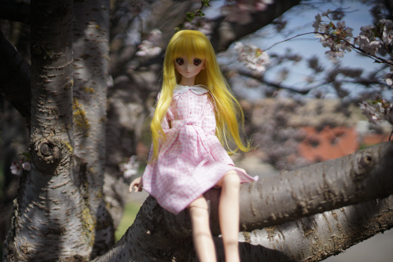

I made a dress yesterday for her and got pollen on it today. It was pretty windy and I had trouble getting the sun to hit her face. I'm going to take kikipop out there in a few days and see what I can get. I don't feel like I got any shots worth posting today though.
The preorders for Lieselotte open tonight! I've wanted her since "in my closet room" version, but thought it'd never happen (aftermarket prices) so I just kept her in the back of my mind. I was very happy to see her preorder announced, even though I'm not in love with the outfit or faceup. It's a blessing to not have to deal with a lottery or a clickwar.
I also hit the 3000 photo milestone for my camera! Very exciting yay!